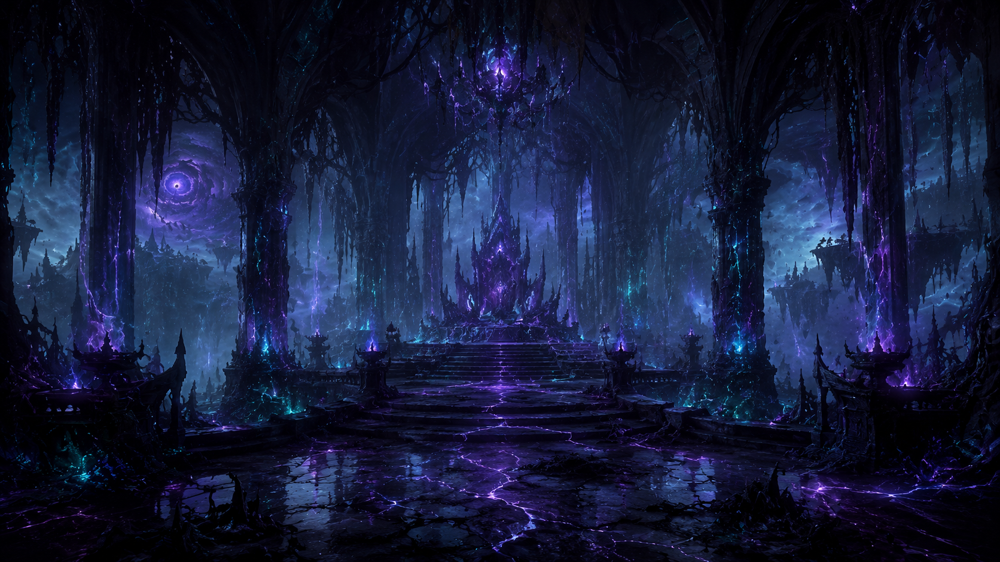
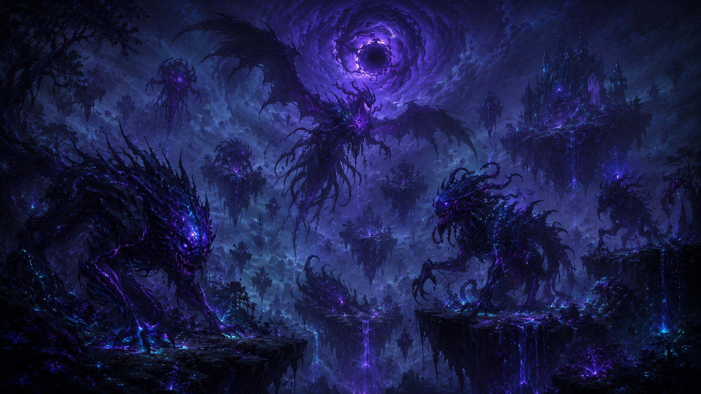
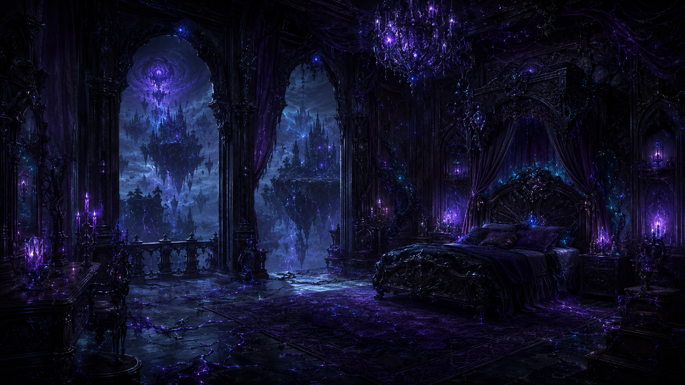

A fractured realm of floating islands, corrupted forests and endless shadows, where ancient magic twists the land and creatures of the abyss emerge from the darkness.
Discover the VoidThe Suffocating Void is unlike any other territory in Eryndor. The land itself has been fractured into enormous floating islands suspended above an abyss, while corrupted magic continues to distort the forests, rivers and creatures that remain there.
At its center stands the Hollow Citadel, surrounded by dark forests and unstable terrain. Waterfalls fall from the edges of floating islands without ever reaching solid ground, while violet cracks spread across the stone as if something beneath the land were constantly trying to escape.
The Abyssal Court governs the Voidborn and Corrupted Spirits that inhabit the region, while the Abyssal Host protects its territories. Void, shadow and corruption magic are present almost everywhere, making even simple travel dangerous. Some areas can change without warning, and entire paths or pieces of land may no longer exist when travelers return.
The ecosystem has been transformed by the same corruption. Black trees, glowing violet fungi and unnatural vines grow across the islands, while Shadow Beasts and distorted creatures wander through the forests. Many species found here exist nowhere else in Eryndor, as if the Void itself had reshaped ordinary life into something entirely new.

The Hollow Citadel
The Abyssal Court
Voidborn, Corrupted Spirits and Shadow Beasts
Void, Shadow and Corruption Magic
Cold, Dark and Unstable
The Abyssal Host





